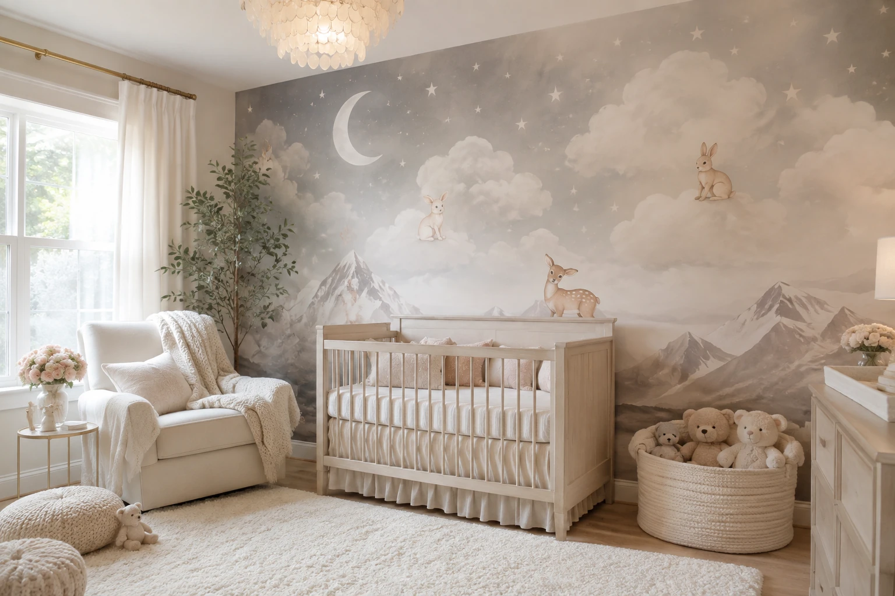
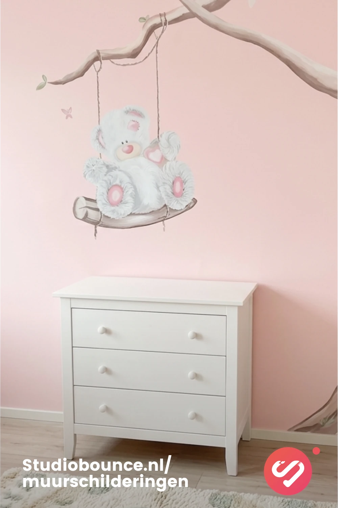

Behang
- Veel kant-en-klare dessins
- Patroon blijft herhalen
- Minder flexibel rond meubels
- Kan zichtbaar verouderen
Kinderkamer muurschildering
Een handgeschilderde muur maakt van een baby- of kinderkamer een plek met een eigen verhaal. Geen standaard behang of sticker, maar een ontwerp dat echt bij jullie ruimte en kind past.

Waarom een muurschildering?
Behang en muurstickers kunnen een kamer snel veranderen. Een muurschildering gaat een stap verder: het ontwerp wordt gemaakt voor precies die muur, kan rekening houden met meubels en hoeken en voelt daardoor veel meer als onderdeel van het interieur.
Zo kan een rustige babykamer subtiele dieren en zachte natuur krijgen, terwijl een oudere kinderkamer juist kan veranderen in een jungle, onderwaterwereld, sterrenstelsel of fantasielandschap.
Voorbeelden
Van rustige natuurtonen tot kleurrijke dieren en avontuurlijke thema's: iedere muur krijgt een eigen sfeer.
Jungle
Natuur
Dieren Avontuur
AvontuurVoor groot én klein
Bij een babykamer werkt een zachte muurschildering vaak mooi als alternatief voor druk behang of losse muurstickers. Denk aan wolken, bosdieren, bloemen of een subtiel landschap dat mee kan groeien met de kamer.
Voor een kinderkamer kan het juist groter en uitgesprokener: een jungle met dieren, een ruimte-thema, bergen, een onderwaterwereld of iets dat helemaal vanuit de interesses van het kind wordt ontworpen.
Ontwerp op maat
Een muurschildering hoeft niet alleen een afbeelding óp de muur te zijn. In het ontwerp kan rekening worden gehouden met de positie van het bed, een kast, schuine wanden, stopcontacten en bestaande kleuren.
Daardoor kan het beeld precies daar beginnen en eindigen waar het voor de kamer logisch voelt. Ook goudaccenten, rustige tinten of juist uitgesproken kleuren zijn mogelijk.
Jouw idee op de muur
Stuur de afmetingen van de muur en je eerste idee via WhatsApp. Dan kijk ik graag mee naar de mogelijkheden.
Vrijblijvend contact opnemen →